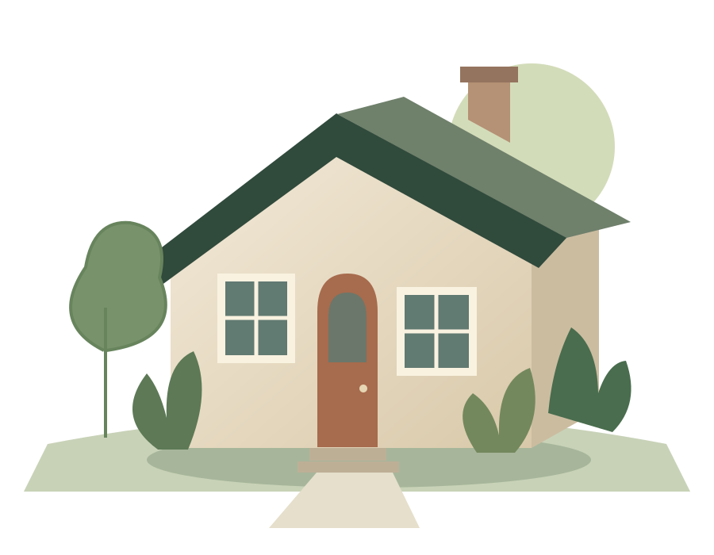

A fresh coat.
Interior walls, trim, and touch-ups. Tell us about the rooms and the finish you have in mind.
Explore painting →A LITTLE HELP AROUND THE HOUSE
Painting, small repairs, and seasonal maintenance. Find the help you need, check the service area, and tell us what you have in mind.
Plan your project ↗
YOUR NEXT PROJECT STARTS AT HOME.PRACTICAL HELP. CLEAR SCOPE.
Interior walls, trim, and touch-ups. Tell us about the rooms and the finish you have in mind.
Explore painting →Loose fittings, sticking doors, and small repairs that keep finding their way back onto your list.
Plan a repair →A focused maintenance visit. Outline the tasks so the right scope can be agreed before work starts.
Plan maintenance →LET’S START WITH THE BASICS
Try the sample inquiry flow. Choose your project, area, and timing to see a request summary.
Cedar & Stone is a fictional business. No message is sent and no appointment is booked.